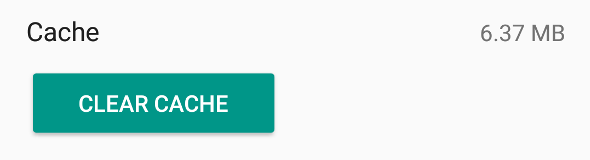

<div class="row justify-content-sm-center justify-content-lg-start"> 
  <div class="col-md-9 col-lg-7 col-xl-6">
    <h1>Help</h1>

    <h2 class="mt-3">Fix an issue</h2>
    <div class="list-group">
      <a class="list-group-item list-group-item-action" href="#subs">Subscription is not recognized</a>
      <a class="list-group-item list-group-item-action" href="#outage">Could not talk to TMDB or Trakt</a>
      <a class="list-group-item list-group-item-action" href="#syncfail">Show, episode or movie data is outdated or missing</a>
      <a class="list-group-item list-group-item-action" href="#missing">Can not find a show or movie</a>
      <a class="list-group-item list-group-item-action" href="#translation">A translation is wrong or missing</a>
      <a class="list-group-item list-group-item-action" href="#airtimes">The release time of a show or episode is wrong</a>
      <a class="list-group-item list-group-item-action" href="#watch">Watching shows or movies is not supported</a>
      <a class="list-group-item list-group-item-action" href="#images">Images are not displayed</a>
      <a class="list-group-item list-group-item-action" href="#battery">Notifications appear too late</a>
      <a class="list-group-item list-group-item-action" href="#widget">The widget is not updating or is missing</a>
      <a class="list-group-item list-group-item-action" href="#timezone">After changing the time zone times are incorrect</a>      
    </div>
    
    <h2 class="mt-3">How to</h2>
    <h3>SeriesGuide X</h3>
    <div class="list-group">
      <a class="list-group-item list-group-item-action" href="#upgrade">Unlock all features</a>
      <a class="list-group-item list-group-item-action" href="#hideicon">Hide the SeriesGuide X launcher icon</a>
    </div>

    <h3 class="mt-3">Basics</h3>
    <div class="list-group">
      <a class="list-group-item list-group-item-action" href="#buttons">Check in, set watched, add to collection and skip episodes</a>
      <a class="list-group-item list-group-item-action" href="#remove">Remove a show</a>
      <a class="list-group-item list-group-item-action" href="#hide">Make a hidden show visible again</a>
      <a class="list-group-item list-group-item-action" href="#update">Manually update shows</a>
      <a class="list-group-item list-group-item-action" href="#language">Change the app language</a>
      <a class="list-group-item list-group-item-action" href="#content-language">Change the language of a show</a>
      <a class="list-group-item list-group-item-action" href="#sources">Improve show, episode and movie data</a>
    </div>

    <h3 class="mt-3">Backup and Cloud</h3>
    <div class="list-group">
      <a class="list-group-item list-group-item-action" href="#backup">Backup or restore your data using files</a>
      <a class="list-group-item list-group-item-action" href="#autobackup">Restore your data from an Auto-Backup</a>
      <a class="list-group-item list-group-item-action" href="#sync">Backup and sync using SeriesGuide Cloud or Trakt</a>
      <a class="list-group-item list-group-item-action" href="#change-email">Change the email address used for SeriesGuide Cloud</a>
      <a class="list-group-item list-group-item-action" href="#delete-account">Delete your SeriesGuide Cloud account</a>
    </div>
    
    <h3 class="mt-3">Trakt integration</h3>
    <div class="list-group">
      <a class="list-group-item list-group-item-action" href="#connecttrakt">Connect to Trakt/Troubleshooting</a>
      <a class="list-group-item list-group-item-action" href="#library">Add shows from your Trakt library</a>
      <a class="list-group-item list-group-item-action" href="#whatissynced">What is synced with Trakt</a>
      <a class="list-group-item list-group-item-action" href="#checkins">How check-ins work</a>
    </div>
    
    <h2 class="mt-3">Something else?</h2>
    <div class="list-group">
      <a class="list-group-item list-group-item-action" href="#apple">Will there be an iOS version?</a>
      <a class="list-group-item list-group-item-action" href="#contact">Ask for help</a>
    </div>

<!-- ##################################################### -->

    <span class="anchor" id="fixes"></span>
    <h2 class="mt-5">Fix an issue</h2>

    <span class="anchor" id="subs"></span>
    <section class="mt-2">
      <h3>Subscription is not recognized</h3>
      <p>If you have an active subscription, but SeriesGuide does not recognize it, have a look at the <a href="https://support.google.com/googleplay/answer/1050566">troubleshooting steps from Google Play Help</a>.</p>
      <p>Should this not resolve your issue, please contact me (tap <strong>More</strong> <span class="material-symbols-outlined">menu</span> > <strong>Send Feedback</strong> inside the app or use the developer contact <a href="{{ site.data.links.play }}">on the Play Store page</a>).</p>
    </section>

    <span class="anchor" id="outage"></span>
    <section class="mt-2">
      <h3>Could not talk to TMDB or Trakt</h3>
      <p><span class="emoji">ℹ️</span> <strong>Since 2022-04-10, in Russia or Belarus</strong> it is currently not 
        possible to search for, add or update shows and movies in SeriesGuide.</p>

      <p>This is because the data source SeriesGuide uses, <a href="{{ site.data.links.tmdb }}">TMDB</a>, 
        is blocking access from IP addresses attributed to the Russia or Belarus region out of solidarity due to the ongoing war in Ukraine. 
         <a href="https://blog.themoviedb.org/the-movie-database-suspends-access-from-russia-and-belarus-b6a1a96fb35b">Read the TMDB statement.</a></p>

      <hr>

      <p><strong><span class="emoji">ℹ️</span> Some countries or internet service providers (ISP) are known to block 
        e.g. themoviedb.org or trakt.tv.</strong> In this case it may be possible to switch to 
        another connection (different ISP) or use VPN software (at your own risk).</p>

      <hr>

      <p>If you receive this error there might be a temporary issue with either your internet connection 
        or one of the services SeriesGuide uses.</p>
        
      <p><strong>You can check the following to learn about ongoing issues and their status:</strong></p>
      <ul>
        <li><a href="https://twitter.com/themoviedb">TMDB Twitter account</a> and <a href="https://status.themoviedb.org">status.themoviedb.org</a></li>
        <li><a href="https://twitter.com/trakt">Trakt Twitter account</a> and <a href="https://status.trakt.tv/">status.trakt.tv</a></li>
        <li><a href="{{ site.data.links.twitter }}">SeriesGuide Twitter account</a> or <a href="{{ site.data.links.community }}">announcements on the forum</a></li>
      </ul>
      
      <p>Keep in mind that TMDB, Trakt as well as SeriesGuide are services operated by a small or even one-person staff. 
        If the service experiences issues, the person which can fix it can not always be available 
        (it's night time, they are working another job or are on holiday). So it can take time until 
        issues are resolved. Please do not expect 24/7 availability like from services that can 
        afford a large, around the world support staff.</p>

      <p><strong>So please be patient and try again later.</strong> If the issue persists after a few days, then please let me know about it.</p>
        
      <p>Thank you for understanding!</p>
    </section>

    <span class="anchor" id="syncfail"></span>
    <section class="mt-2">
      <h3>Show, episode or movie data is outdated or missing</h3>
      <p><span class="emoji">ℹ</span> <strong>On OnePlus OxygenOS 12</strong> syncing fails if your device has less than 10% free storage.</p>
      <p><span class="emoji">ℹ</span> Show and movie data is loaded from the user-created database
        at <a href="{{ site.data.links.tmdb }}">themoviedb.org</a>. The contributors there are typically quick
        to update things. If not, consider to help out.</p>
      <p><span class="emoji">ℹ</span> Access to <a href="#sources">the services SeriesGuide uses</a> 
        might be (temporarily) blocked in your region, for example because your internet connection has issues or
        your internet provider is blocking access. Try <a href="{{ site.data.links.community }}">checking the forum</a>
        for other affected users.</p>

      <p>Regardless, here are some things to check and try:</p>
      
      <p class="title">Check <em>Sync &amp; Update</em> setting</p>
      <p>Tap <strong>More</strong> <span class="material-symbols-outlined">menu</span>, then <b>Settings</b>
        and check if <strong>Sync &amp; Update</strong> is enabled.</p>
      
      <p class="title">Check device Accounts sync setting</p>
      <p>Open the Settings app of your device. Find and open the Accounts settings and check that 
        <strong>Auto-sync data</strong> is enabled. You should also see a SeriesGuide Sync account there.</p>
      
      <p class="title">Check device power saving settings</p>
      <p>SeriesGuide might not be able to update in the background because of battery use optimization settings. 
        Try to <a href="#battery">exclude SeriesGuide from battery use optimizations</a>.</p>
      
      <p class="title">Last resort: remove and add the show again</p>
      <p>If a show does not update, as a last resort, remove the show and add it again.</p>
    </section>

    <span class="anchor" id="missing"></span>
    <section class="mt-2">
      <h3>Can not find a show or movie</h3>
      <p><strong>If the show is added to your library:</strong></p>
      <ul>
        <li>From the <strong>Shows</strong> list, tap <strong>Filter shows</strong> <span class="material-symbols-outlined" aria-hidden="true">filter_list</span>.</li>
        <li>Check the Filter shows and Sort shows settings. A show might be not shown or shown at an unexpected position because of them.</li>
      </ul>

      <p><strong>When trying to search for a show or movie:</strong></p>
      <ul>
        <li>If search can't find a show, <a href="https://discuss.seriesgui.de/t/tips-for-searching-for-shows/67">try the tips post on the forum</a>.</li>
        <li>Also, sometimes a supposedly TV show is actually a series of movies and can be found under Movies.</li>
        <li>The same applies to movies, for example made for TV movies are found under Shows.</li>
      </ul>
      <p>Anyhow, all series and movie data is loaded from the user-created database at <a href="{{ site.data.links.tmdb }}">themoviedb.org</a></a>. Feel free to help out there to add missing information for all other users.</p>
    </section>

    <span class="anchor" id="translation"></span>
    <section class="mt-2">
      <h3>A translation is wrong or missing</h3>
      <p class="title">Shows, episodes or movies</p>
      <p>You can help improve the translation at <a href="{{ site.data.links.tmdb }}">themoviedb.org</a>.</p>
      <p class="title">SeriesGuide app</p>
      <p>Please <a href="#contact">send a message</a>. Or consider <a href="{{ site.data.links.crowdin }}">to translate or proof read</a>.</p>
    </section>

    <span class="anchor" id="airtimes"></span>
    <section class="mt-2">
      <h3>The release time of a show or episode is wrong</h3>
      <p><span class="emoji">ℹ</span> The show/episode release times are restricted to the <strong>original release</strong> in the country of origin.</p>
      <p><span class="emoji">✅</span> If you want local listings and listings of re-broadcasts, please look for a suitable TV guide offering in your region.</p>
      <p>If <strong>the release country is known</strong>, SeriesGuide assumes the release time is in a time zone of this country (for example Eastern Time for US shows, British Time for British shows, Central European Time for German shows, ...). Then it is <strong>converted to your device time zone</strong>.</p>
      <p>If <strong>the release country is not known</strong>, SeriesGuide will assume the country to be the United States of America.</p>
      <p>You can view the country in the detailed show information.</p>
      <p><span class="emoji">ℹ</span> If your device is <strong>set to a US mainland time zone</strong>, SeriesGuide will automatically adjust the release time (for example one hour earlier in Central Time).</p>
      <p>If <strong>the displayed country is not correct</strong> it can be changed at <a href="#sources">the data source</a>.</p>
      <p>If <strong>the country is correct</strong>, but you believe the release time is incorrectly converted in SeriesGuide, please <a href="#contact">send a message</a>.</p>
    </section>

    <span class="anchor" id="watch"></span>
    <section class="mt-2">
      <h3>Watching shows or movies is not supported</h3>
      <p>You can <strong>not</strong> watch shows or movies within SeriesGuide.</p>
      <p>However, on the episode and movie details screens there is a Stream or puchase button to help you find streaming and purchasing services a show or movie is available on in your region.</p>
    </section>

    <span class="anchor" id="images"></span>
    <section class="mt-2">
      <h3>Images are not displayed</h3>
      <dl class="sg-padded-list">
        <dt>Desired language has no poster</dt>
        <dd>Try to <a href="#content-language">change the language of the show</a>, most often to English. If you prefer another language, <a href="#content-language">change the alternative language</a> in settings to English instead.</dd>

        <dt>Image cache is corrupted</dt>
        <dd>You can try clearing the cache for SeriesGuide. Tap <strong>More</strong> <span class="material-symbols-outlined" aria-hidden="true">menu</span> > <b>Settings</b> > <b>Clear image cache</b>. In the App Info screen that opens, go to Storage and tap Clear Cache.</dd>

        

        <dt class="mt-3"><em>Images over Wi-Fi only</em> is enabled</dt>
        <dd>If your current connection is metered and this setting is enabled, no images are downloaded. Tap <strong>More</strong> <span class="material-symbols-outlined" aria-hidden="true">menu</span> > <b>Settings</b> and disable the setting.</dd>
        
        <dt><em>Prevent spoilers</em> setting is enabled</dt>
        <dd>If an episode is not watched and this setting is enabled, the episode image remains hidden. Tap <strong>More</strong> <span class="material-symbols-outlined" aria-hidden="true">menu</span> > <b>Settings</b> > <b>Advanced</b>. Disable the setting.</dd>
      </dl>
    </section>

    <span class="anchor" id="battery"></span>
    <section class="mt-2">
      <h3>Notifications appear too late</h3>
      <p>If notifications only appear once you start using your device, SeriesGuide is affected by the battery use optimization settings of your device.</p>
      <p>To disable battery optimization for SeriesGuide:</p>
      <ul>
        <li>open the <strong>Settings</strong> app,</li>
        <li>go to <strong>Apps</strong> and look for SeriesGuide,</li>
        <li>open the <strong>Battery</strong> section,</li>
        <li>choose <strong>Unrestricted</strong> or change <strong>Battery optimization</strong> to <strong>Don't optimize</strong>.</li>
      </ul>
    </section>

    <span class="anchor" id="widget"></span>
    <section class="mt-2">
      <h3>The widget is not updating or is missing</h3>
      <p>You may have moved SeriesGuide to the SD card/external storage. For SeriesGuide to work properly it <strong>has to be installed on your device/internal memory</strong>. Move it back and everything should be fine again (if not, <strong>try rebooting your device</strong>).</p>
      <p>If that is not the case, it may help to <a href="#battery">exclude SeriesGuide from battery optimizations</a>.</p>
    </section>

    <span class="anchor" id="timezone"></span>
    <section class="mt-2">
      <h3>After changing the time zone, times are incorrect</h3>
      <p>Please stop SeriesGuide and restart it:</p>
      <ol>
        <li>Tap the switch app button on your device.</li>
        <li>Swipe SeriesGuide away or tap the X button.</li>
        <li>Launch the SeriesGuide app again.</li>
      </ol>
      <p>If that won't help, try to <a href="#update">update all shows</a>.</p>
    </section>

    <!-- ##################################################### -->

    <span class="anchor" id="howto"></span> 
    <h2 class="mt-5">How to</h2>

    <span class="anchor" id="upgrade"></span>
    <section class="mt-2">
      <h3>Unlock all features</h3>
      <p>Learn more about <a href="/whypay">unlocking all features</a>.</p>
    </section>

    <span class="anchor" id="hideicon"></span>
    <section class="mt-2">
      <h3>Hide the SeriesGuide X app icon from the launcher</h3>
      <p><strong><span class="emoji">ℹ</span> On Android 13 and newer, it is no longer possible to hide the 
        launcher icon (apparently malicious apps have been abusing this to hide from users).</strong></p>
      <p>Launch the SeriesGuide X unlock app, then tap the button at the bottom to hide the launcher icon.
        It may take a few seconds for the icon to disappear from your launcher. On some devices, 
        it may be necessary to reboot the device.</p>
      <p>To restore the icon, uninstall the SeriesGuide X app either from your devices Settings or the Play Store app.
        Then install it again.</p>
    </section>

    <!-- ##################################################### -->

    <span class="anchor" id="buttons"></span>
    <section class="mt-2">
      <h3>Check in, set watched, add to collection and skip</h3>
      <p>Each episode or movie displays a button bar with up to four actions:</p>
      <p></p>
      <ul>
          <li><a href="#checkins">Check in via Trakt</a> if you are watching right now. (<strong>Not available</strong> if SeriesGuide Cloud is connected.)</li>
          <li><b>Set watched</b> if you have watched this.</li>
          <li><b>Add to collection</b> if you purchased (DVD, Blu-Ray) or downloaded this.</li>
          <li><b>Skip</b> if you don't want to watch this right now. (Only for episodes, not synced with Trakt)</li>
      </ul>
      <p><span class="badge badge-info">Note</span> On Android you can tap and hold most symbol-only buttons to show a brief description of what they do.</p>
    </section>

    <span class="anchor" id="remove"></span>
    <section class="mt-2">
      <h3>Remove a show</h3>
      <p>To remove a show:</p>
      <ol>
        <li>From the show list, tap <strong>More options</strong> <span class="material-symbols-outlined" aria-hidden="true">more_vert</span> of a show.</li>
        <li>Tap <strong>Remove</strong>.</li>
      </ol>
      
    </section>

    <span class="anchor" id="hide"></span>
    <section class="mt-2">
      <h3>Make a hidden show visible again</h3>
      <ol>
        <li>From the Shows list, tap the <strong>Filter shows <span class="material-symbols-outlined" aria-hidden="true">filter_list</span></strong> button.</li>
        <li>Change <strong>Hidden</strong> to <em>Included</em> <span class="material-symbols-outlined" aria-hidden="true">add_box</span> and all other filters to <em>Deactivated</em> <span class="material-symbols-outlined" aria-hidden="true">check_box_outline_blank</span> to display all hidden shows.</li>
        <li>Find the show to make visible and tap <strong>More options</strong> <span class="material-symbols-outlined" aria-hidden="true">more_vert</span>.</li>
        <li>Tap <strong>Do not hide</strong>.</li>
      </ol>
      <p><span class="badge badge-info">Note</span> After tapping the filter button use <strong>Reset all filters</strong> to restore the default shows list view.</p>
    </section>

    <span class="anchor" id="update"></span>
    <section class="mt-2">
      <h3>Manually update shows</h3>
      <p><span class="badge badge-info">Note</span> By default, show and episode data is updated regularly.</p>
      <p>Update a single show:</p>
      <ol>
        <li>From the show list, tap <strong>More options</strong> <span class="material-symbols-outlined" aria-hidden="true">more_vert</span> of a show.</li>
        <li>Select <strong>Update</strong>.</li>
      </ol>
      <p>Update all shows:</p>
      <ol>
        <li>From the show list, tap <strong>More options</strong> <span class="material-symbols-outlined" aria-hidden="true">more_vert</span>.</li>
        <li>Tap <strong>Sync manually</strong>.</li>
        <li>Tap <strong>Sync &amp; Update</strong>.</li>
      </ol>
      <p><span class="badge badge-info">Note</span> <em>You can force a re-download of all shows using <strong>Sync &amp; Download all</strong>.</em></p>
    </section>

    <span class="anchor" id="language"></span>
    <section class="mt-2">
      <h3>Change the app language</h3>
      <p>If available, SeriesGuide will use <strong>the language your Android device is set to</strong>. Otherwise it will fall back to English. To change the language of your Android device look in the Android Settings app.</p>
      <p><span class="badge badge-info">Note</span> All translations come from amazing volunteers who translate on crowdin. Please consider <a href="{{ site.data.links.crowdin }}">to translate or proof read</a> as well!</p>
    </section>

    <span class="anchor" id="content-language"></span>
    <section class="mt-2">
      <h3>Change the language of a show</h3>
      <p><span class="badge badge-info">Note</span> SeriesGuide adds a show in the language you have chosen using the globe icon.</p>
      <p>To change the language of a show already in your library:</p>
      <ol>
        <li>Tap on the show to view its overview screen.</li>
        <li>Swipe to the Show tab.</li>
        <li>Tap the globe icon <span class="material-symbols-outlined" aria-hidden="true">language</span>.</li>
        <li>Choose a language.</li>
      </ol>
      <p>In <strong>More</strong> > <strong>Settings</strong> > <strong>Advanced</strong> you can set an <strong>Alternative Language</strong>. The alternative language will be used if no translation or poster in the language chosen for a particular show is available.</p>
      <p><span class="badge badge-info">Note</span> If a translation is missing, <a href="#sources">help contribute one</a>.</p>
    </section>

    <span class="anchor" id="sources"></span>
    <section class="mt-2">
      <h3>Improve show, episode and movie data</h3>
      <p>The main data provider for shows and movies is <a href="{{ site.data.links.tmdb }}">themoviedb.org (TMDb)</a>. Additional data for shows is provided by <a href="{{ site.data.links.trakt }}">Trakt</a>.</li>
      </ul>
      
      <p>The data in TMDB is contributed by its users. <strong>Consider to help this project by adding or updating information!</strong></p>
      <p>Below are the sources of some important data in SeriesGuide:</p>
      <div class="table-responsive">
        <table class="table table-hover">
          <thead>
            <tr>
              <th>Shows</th>
              <th></th>
            </tr>
          </thead>
          <tbody>
            <tr>
              <td>Release time, day<br/>and country (time zone):</td>
              <td><a href="{{ site.data.links.trakt }}">Trakt</a></td>
            </tr>
            <tr>
              <td>Cast and Crew:</td>
              <td><a href="{{ site.data.links.tmdb }}tv">TMDb</a><br/>Show > Regular Cast/Crew.</td>
            </tr>
            <tr>
              <td>Poster:</td>
              <td><a href="{{ site.data.links.tmdb }}">TMDb</a><br/>Show > Media > Posters</td>
            </tr>
          </tbody>
        </table>
      </div>
      <div class="table-responsive">
        <table class="table table-hover">
          <thead>
            <tr>
              <th>Episodes</th>
              <th></th>
            </tr>
          </thead>
          <tbody>
            <tr>
              <td>Release date:</td>
              <td><a href="{{ site.data.links.tmdb }}">TMDb</a><br/>Episode > Air Date</td>
            </tr>
            <tr>
              <td>Image:</td>
              <td><a href="{{ site.data.links.tmdb }}">TMDb</a><br/>Episode > Images</td>
            </tr>
          </tbody>
        </table>
      </div>
      <div class="table-responsive">
        <table class="table table-hover">
          <thead>
            <tr>
              <th>Movies</th>
              <th></th>
            </tr>
          </thead>
          <tbody>
            <tr>
              <td>Release date:</td>
              <td><a href="{{ site.data.links.tmdb }}movie">TMDb</a><br/>Movie > Release Information</td>
            </tr>
            <tr>
              <td>Image:</td>
              <td><a href="{{ site.data.links.tmdb }}movie">TMDb</a><br/>The poster for your language.</td>
            </tr>
          </tbody>
        </table>
      </div>
    </section>

    <!-- ##################################################### -->
    
    <span class="anchor" id="backup"></span>  
    <section class="mt-2">
      <h3>Backup or restore your data using files</h3>
      <p><strong>To backup your shows, lists and movies:</strong></p>
      <ol>
        <li>In the bottom bar, tap <strong>More</strong> <span class="material-symbols-outlined" aria-hidden="true">menu</span> > <strong>Settings</strong>.</li>
        <li>Tap <strong>Backup/Restore</strong>.</li>
        <li>Look for the <strong>Create backup</strong> section.</li>
        <li>Tap <strong>Select file</strong> for either shows, lists or movies to create a backup.</li>
      </ol>
      <p><span class="badge badge-info">Note</span> On Android 4.3 and older you can not choose the backup file location. Instead SeriesGuide will store the backup files in the <em>Download</em> folder on your device.</p>
      <p><strong>To restore your shows, lists and movies:</strong></p>
      <ol>
        <li>In the bottom bar, tap <strong>More</strong> <span class="material-symbols-outlined" aria-hidden="true">menu</span> > <strong>Settings</strong>.</li>
        <li>Tap <strong>Backup/Restore</strong>.</li>
        <li>Look for the <strong>Restore backup</strong> section.</li>
        <li>Tap <strong>Select file</strong> for each type of data you want to restore and select the matching backup file.</li>
        <li>Tick the check box next to each type you want to restore.</li>
        <li>Tap <strong>Restore backup</strong>.</li>
      </ol>
      <p>To restore your backup <strong>on another device</strong>, first transfer the created files to it. For example send yourself an email with the files attached, plug your device into a computer to access its storage or save the files to online storage.</p>
      <p><span class="badge badge-info">Note</span> You can use a <a href="https://play.google.com/store/search?q=file+manager&amp;c=apps">file manager</a> app to view or copy the backup files.</p>
      <p><span class="badge badge-info">Note</span> You can import data from another source as long as it uses the <a href="https://github.com/UweTrottmann/SeriesGuide/wiki/JSON-export-format">JSON format that SeriesGuide expects</a>. 
        Add some shows/lists/movies and create a backup, then just open the created JSON file to see an example with actual data.</p>
    </section>

    <span class="anchor" id="autobackup"></span>
    <section class="mt-2">
      <h3>Restore your data from an Auto Backup</h3>
      <p>Auto Backup creates a file-based <strong>weekly automatic backup</strong> of your shows, lists and movies.</p>
      <p><strong>To restore an Auto Backup:</strong></p>
      <ol>
        <li>In the bottom bar, tap <strong>More</strong> <span class="material-symbols-outlined" aria-hidden="true">menu</span> > <strong>Settings</strong>.</li>
        <li>Tap <strong>Auto Backup</strong>.</li>
        <li>Tap the <strong>Restore Auto Backup</strong> button. If it is disabled, there is no auto backup available to restore from. Use the Backup/Restore tool to restore a backup from another location (e.g. Google Drive).</li>
      </ol>
      <p><span class="badge badge-danger">Note</span> Restoring a backup affects your device only. It won't affect data synced to Cloud or Trakt.</p>
      <p><strong>To turn on and configure Auto Backup:</strong></p>
      <ol>
        <li>In the bottom bar, tap <strong>More</strong> <span class="material-symbols-outlined" aria-hidden="true">menu</span> > <strong>Settings</strong>.</li>
        <li>Tap <strong>Auto Backup</strong>.</li>
        <li>Turn on Auto Backup.</li>
        <li>(Recommended) Enable the option to create copies, select files in an off-device location (e.g. Google Drive).</li>
      </ol>
      <p><span class="badge badge-danger">Note</span> The Auto Backup files are saved to a storage directory that is removed when the app is uninstalled. Hence, it is recommended to turn on the option to create additional backups to an off-device location (e.g. Google Drive).</p>
    </section>

    <span class="anchor" id="sync"></span>
    <section class="mt-2">
      <h3>Backup and sync using SeriesGuide Cloud or Trakt</h3>
      <p>You can backup and sync using either SeriesGuide Cloud or <a href="{{ site.data.links.trakt }}">Trakt</a>. Each has its advantages and disadvantages. Which one you want to use depends on the devices and apps you use.</p>
      <p class="title">SeriesGuide Cloud</p>
      <p>Works best if you only use SeriesGuide on your devices. It supports backing up and syncing all SeriesGuide data:</p>
      <ul>
        <li>Sync
          <ul>
            <li>Shows</li>
            <li>Lists</li>
            <li>Movies</li>
          </ul>
        </li>
      </ul>
      
      <p class="title">Trakt</p>
      <p>Works best if you use other apps connected to Trakt (for example <a href="{{ site.data.links.trakt }}apps">apps on iOS or a media center</a>) or the <a href="{{ site.data.links.trakt }}">Trakt website</a>. It supports:</p>
      <ul>
        <li>Sync
          <ul>
            <li>Shows (excluding favorite/hidden state, skipped state)</li>
            <li>Movies (watchlist, collection, watched)</li>
          </ul>
        </li>
        <li>Display your and friends Trakt viewing history.</li>
        <li>Check-in (episodes and movies).</li>
        <li>Post comments.</li>
        <li>Rate shows, episodes and movies.</li>
      </ul>
      <p><span class="badge badge-info">Note</span> Unlike with Cloud, shows are not added automatically and the Lists section is not synced. But you can quickly <a href="#library">access your Trakt show watchlist and watched and collected shows</a>.</p>
      <p>Check-Ins are submitted immediately to Trakt. But only with the next sync are checked-in episodes and movies marked as watched within SeriesGuide.</p>
      
      <p class="title">Setup</p>
      <p>To connect to either service:</p>
      <ol>
        <li>In the bottom bar, tap <strong>More</strong> <span class="material-symbols-outlined" aria-hidden="true">menu</span>.</li>
        <li>Tap either <strong>SeriesGuide Cloud</strong> or <strong>Trakt</strong>.</li>
        <li>Tap the sign in or connect button and complete the sign-in process.</li>
      </ol>
      <p><span class="badge badge-info">Note</span> You can be <strong>connected to SeriesGuide Cloud and Trakt</strong> at the same time. Setting watched and collected, commenting, rating and more will still be sent to Trakt. However, <strong>check-in and sync with Trakt will be disabled</strong>. Changes on the Trakt website or other apps connected to Trakt will not download.</p>
      <p><span class="badge badge-info">Note</span> <strong>You can always change your mind!</strong> First, disconnect both SeriesGuide Cloud and Trakt. Then, sign into only one of them. The data on your device will be merged with the existing data on the service.</p>
    </section>

    <span class="anchor" id="change-email"></span>
    <section class="mt-2">
      <h3>Change the email address used for SeriesGuide Cloud</h3>
      <p>This requires to create a new account with the new email address. Optionally, you can remove your previous account. To do so:</p>
      <ol>
        <li>In the bottom bar, tap <strong>More</strong> <span class="material-symbols-outlined" aria-hidden="true">menu</span>.</li>
        <li>Tap <strong>SeriesGuide Cloud</strong>.</li>
        <li>Then either <strong>Sign Out</strong> or <strong>Delete account</strong>.</li>
        <li>Once completed, <strong>Sign In</strong> with a different email address to create a new account. All data on your device will be uploaded to the new account.</li>
      </ol>
    </section>

    <span class="anchor" id="delete-account"></span>
    <section class="mt-2">
      <h3>Delete your SeriesGuide Cloud account</h3>
      <p><span class="badge badge-info">Note</span> This will remove all uploaded shows, episodes, lists and movies from Cloud. You can create a new account at any time.</p>
      <ol>
        <li>In the bottom bar, tap <strong>More</strong> <span class="material-symbols-outlined" aria-hidden="true">menu</span>.</li>
        <li>Tap <strong>SeriesGuide Cloud</strong>.</li>
        <li>Then tap <strong>Delete account</strong> and confirm.</li>
      </ol>
      <p>If you do not have SeriesGuide installed, you can also send an email to <a href="mailto:support@seriesgui.de">support@seriesgui.de</a> to request your account to get deleted.</p>
      <p><span class="badge badge-info">Note</span> To <a href="https://support.trakt.tv/support/solutions/articles/70000264979-how-do-i-delete-my-account-what-information-is-kept-can-i-make-my-profile-private-">delete your Trakt account</a>, visit <a href="{{ site.data.links.trakt }}">their website</a>.</p>
    </section>

<!-- ##################################################### -->

    <span class="anchor" id="connecttrakt"></span>
    <section class="mt-2">
      <h3>Connect to Trakt</h3>
      <ol>
        <li>Tap <strong>More</strong> <span class="material-symbols-outlined" aria-hidden="true">menu</span> > <strong>Trakt</strong>.</li>
        <li>Tap <strong>Connect</strong> and follow the onscreen instructions.</li>
      </ol>
      <p><span class="badge badge-info">Troubleshooting</span> If you can't connect (white screen, error message), Trakt may currently be unreachable (check <a href="http://status.trakt.tv">status.trakt.tv</a>, <a href="https://twitter.com/trakt">@trakt</a> or <a href="{{ site.data.links.community }}">the SeriesGuide community</a> for status updates). Please try again later.</p>
      <p>Try to turn off any proxy or VPN (for example for ad blocking). Try to clear the SeriesGuide cache (in your device settings, in <strong>Apps</strong> find SeriesGuide, then in Storage tap <strong>Clear Cache</strong>).</p>
      <p>When using a privacy tool (for example a Xposed module), make sure SeriesGuide has access to the Android account system. It needs an account to store your Trakt credentials and sync.</p>
      <p>If your issue persists, please <a href="#contact">contact me</a> about what is going wrong (send a screenshot if possible).</p>
    </section>

    <span class="anchor" id="library"></span>
    <section class="mt-2">
      <h3>Add shows from your Trakt library</h3>
      <ol>
        <li>From the shows list, tap the add button .</li>
        <li>Tap the <strong>Watched</strong>, <strong>Collection</strong> or <strong>Watchlist</strong> button.</li>
        <li>Tap the plus button next to a show or use the add all button at the top.</li>
      </ol>
    </section>

    <span class="anchor" id="whatissynced"></span>
    <section class="mt-2">
      <h3>What is synced with Trakt</h3>
      <p><a href="#sync">See notes about syncing in SeriesGuide.</a></p>
    </section>

    <span class="anchor" id="checkins"></span>
    <section class="mt-2">
      <h3>How check-ins work</h3>
      <p>Check-in to let friends or the world know what you are watching right now. Checking in requires you to <a href="#trakt">connect SeriesGuide only with Trakt</a>.</p>
      <p>After the runtime of the episode or movie has passed, the episode or movie will be set watched on your Trakt profile and in SeriesGuide.</p>
    </section>

<!-- ##################################################### -->

    <span class="anchor" id="apple"></span>
    <section class="mt-5">
      <h2>Will there be an iOS version?</h2>
      <p>At this point there are no plans to release a version for Apple devices. There are some alternatives available, 
        e.g. on the <a href="https://www.apple.com/us/search/tv-show-tracker?src=serp">US App Store</a>.</p>
    </section>

    <span class="anchor" id="contact"></span>
    <section class="mt-5">
      <h2>Something else? Ask for help!</h2>
      <p>For more answers, help and discussions go to the <a href="{{ site.data.links.community }}">SeriesGuide Community page</a> (try 
        <a href="{{ site.data.links.community-search }}">searching</a> or <a href="{{ site.data.links.community-categories }}">browsing categories</a>).
        Or <a href="mailto:support@seriesgui.de">send an email</a>.</p>
    </section>

  </div>
</div>
